생물분류기사(식물) (2019-09-21 기출문제)
1과목: 계통분류학
1. 린네(Linné)의 업적과 가장 거리가 먼 것은?
- 동물의 분류를 체계화 하는데 큰 업적을 남겼다.
- 종명의 명명을 위해 이명법(binomonal nomenclature)을 정착시켰다.
- 동식물 모두에서 채집된 표본을 정리할 때 단순형질에 근거한 분류를 도입하였다.
- 전체 동물을 8강으로 나누고, 분류의 기준으로 다양한 분류학적 형질을 채택하였다.
(정답률: 69%)

2. 다음 중 장상복엽인 식물은?
- 옻나무
- 가래나무
- 오갈피나무
- 아까시나무
(정답률: 73%)
3. 다음 중 척삭동물(Chordata)만이 갖는 특성으로 옳은 것은?
- 방사난할
- 폐쇄혈관계
- 항문뒤 꼬리
- 후신관의 배설계
(정답률: 68%)
4. 쌍자엽식물과 단자엽식물의 일반적인 특징을 비교한 것으로 옳지 않은 것은?
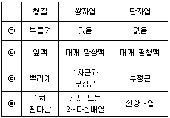
- ㉠
- ㉡
- ㉢
- ㉣
(정답률: 72%)
5. 국화과의 특징으로 가장 거리가 먼 것은?
- 열매는 수과이다.
- 약(꽃밥)이 융합된 취약웅예를 갖는다.
- 자방상위이고 꽃받침은 관모로 변하였다.
- 꽃들은 두상화서에 달리고 주변화와 반상화를 갖는다.
(정답률: 55%)
6. 피자식물의 해부학적 형질이 분류 목적에 적용되는 동안에 밝혀진 일반적인 원리로 가장 거리가 먼 것은?
- 해부학적 자료는 속(屬)이나 그 이상의 분류 계급에서 가장 유용하게 쓰인다.
- 기관이나 조직의 한 가지 해부학적 특징이 종(種) 또는 속(屬)을 대표하는 것이 아닌 경우도 많다.
- 구조적 특수화에서 초래되는 유사점은 평행진화 또는 수렴진화에 의한 것보다는 가까운 유연관계를 의미하는 것이다.
- 해부학적 자료는 유연관계가 있는 것을 보여주기 보다는 가까운 유연관계가 아님을 입증할 때 더 신빙성이 있다.
(정답률: 55%)
7. 다음 보기가 설명하는 학자는?
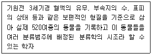
- 밀레투스(Miletus)
- 아리스토텔레스(Aristoteles)
- 히포크라테스(Hippocrates)
- 아낙시만드로스(Anaximandros)
(정답률: 71%)
8. 중생동물에 대한 설명으로 가장 거리가 먼 것은?
- 체표는 섬모로 덮여 있다.
- 석회충과 육방충 및 시상충이 해당한다.
- 몸의 구조는 단순하고 무척추동물의 신장과 내장에 기생한다.
- 후생동물의 발생과정 중 상실배 또는 중실포배에 해당하는 동물군이다.
(정답률: 44%)
9. 완족동물의 특징으로 가장 거리가 먼 것은?
- 유생은 자유유형 한다.
- 외투는 체벽에서 기원한다.
- 심장이 없고 배설계는 전신관이다.
- 선구동물과 후구동물의 특징을 가진 좌우대칭의 체강동물이다.
(정답률: 49%)
10. 동물분류학과 관련된 용어 중 상동과 상사에 대한 설명으로 가장 거리가 먼 것은?
- 새와 나비는 날개는 상동의 대표적인 예이다.
- 어류와 파충류의 비늘은 상사의 대표적인 예이다.
- 상동은 분류학에서 계통발생적 기원이 동일한 기관 간의 관계를 말한다.
- 상사는 외관이나 기능은 비슷하나 발생기원이 다른 기관을 의미하는 해부학적 용어이다.
(정답률: 66%)
11. Simpson(1961)의 분류학의 정의에 관한 설명으로 가장 거리가 먼 것은?
- Taxonomy – 분류에 관해 이론보다는 현장중심적인 응용과학이다.
- Systematics, classification, taxonomy 중 systematics의 범위가 가장 넓다.
- Classigication –동물들을 그것들의 관계의 연속성, 유사성 또는 이 두 가지로 말미암은 관련들을 근거로 여러 무리로 배열하는 것이다.
- systematics - “생물의 종류 및 다양성과 그들 상호 간의 모든 관계들에 관한 과학이다.”라고 하고, 여기서 관계는 계통발생적 관계를 의미하는 좁은 의미가 아닌 생물들 상호간 모든 생물학적 관계라는 넓은 의미이다.
(정답률: 67%)
12. 동물의 명명법 중 한 과군의 모식속 명칭의 각 어간에 사용하는 어미의 연결로 옳지 않은 것은?
- 족 : -ini
- 과 : -ina
- 상과 : -oidea
- 아과 : -inae
(정답률: 64%)
13. 다음 중 한국호랑이(아종)의 학명으로 옳게 쓰인 것은?
- felis tigris coreansis Brass
- Felis tigris coreansis Brass
- felis Tigris coreansis Brass
- Felis Tigris Coreansis Brass
(정답률: 83%)
14. 다음 보기가 설명하는 것으로 옳은 것은?
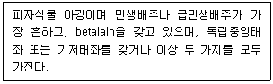
- 석죽아강
- 국화아강
- 생강아강
- 조록나무아강
(정답률: 59%)
15. 린네(Linné)로부터 다윈(Darwin)과 월리스(Wallace) 등에 의해 천천히 발전해 온 것으로 자연선택에 의한 진화의 일반성을 기본적인 가설 또는 전제로 삼는 분류학의 학파는?
- 진화분류학
- 수량분류학
- 집단분류학
- 계통발생학적 분류학
(정답률: 80%)
16. 다음 보기가 설명하는 동물군은?
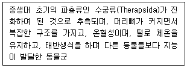
- 어류
- 조류
- 포유류
- 파충류
(정답률: 86%)
17. 극피동물문(Phylum Echinodermata)과 관련된 특징으로 가장 거리가 먼 것은?
- 수관계
- 방사대칭
- 후구동물
- 근육성의 발
(정답률: 60%)
18. R.H.Whittake가 제안한 생물계의 5계에 해당하지 않는 것은?
- Fungi
- Monera
- Animalia
- Euglenophyta
(정답률: 72%)
19. 다음 중 계통에 따른 동물의 분류가 옳지 않은 것은?
- 무체강동물-악구동물
- 의체강동물-편형동물
- 진체강동물-절지동물
- 진체강동물-환형동물
(정답률: 57%)
20. 다음 보기가 설명하는 것으로 옳은 것은?
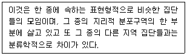
- 변종
- 아종
- 지역종
- 단형종
(정답률: 67%)
2과목: 환경생태학
21. 종의 풍부도(species richness)를 증가시키는 요인과 거리가 먼 것은?
- 생태적 단순성
- 서식처의 복잡성
- 지역의 규모증가
- 종의 지리적 근원지와의 근접성
(정답률: 81%)
22. 대기의 역할에 대한 설명으로 가장 거리가 먼 것은?
- 자외선 차단
- 열을 흡수하여 보유
- 유용한 기체의 저장
- 지구의 중력을 일정하게 유지
(정답률: 70%)
23. 다음 보기에서 설명하는 국제 협약(조약)은?
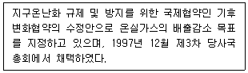
- 런던협약
- 바젤협약
- 교토 의정서
- 몬트리올 의정서
(정답률: 60%)
24. 일반적으로 생태적 피라미드에서 가장 많은 개체수를 가지는 영양단계는?
- 생산자
- 소비자
- 분해자
- 우점종
(정답률: 80%)
25. 개체군의 성장이 S자 형일 때 환경저항으로 볼 수 없는 것은?
- 개체군 감소에 따른 배우자 선택이 풍부해진다.
- 개체수의 증가로 생활공간이 상대적으로 좁아진다.
- 개체수의 증가로 먹이가 부족하여 개체간의 경쟁이 심하다.
- 개체수의 증가에 따른 노폐물의 양도 증가하여 환경오염이 심해진다.
(정답률: 79%)
26. 다음 보기가 설명하는 호수는?
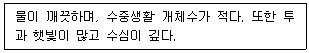
- 과영양호
- 부영양호
- 중영양호
- 빈영양호
(정답률: 70%)
27. 대기오염물질 중 2차 오염물질에 해당하는 것은?
- CO
- SO2
- CH4
- H2SO4
(정답률: 60%)
28. 지구의 질소순환에 대한 설명으로 옳지 않은 것은?
- 건조 대기의 약 79%는 질소이다.
- 식물은 질산염 이온을 흡수한 후 질소와 아미노산을 결합하여 식물단백질을 형성한다.
- 암모니아 이온은 자가영양을 하는 Nitrobactor에 의해 아질산염의 형태로 전환된다.
- 질소고정 박테리아를 제외한 지구상의 대부분 생물들은 대기중의 질소를 직접 이용할 수 없다.
(정답률: 68%)
29. 묵밭천이(old field succession)에 대한 설명으로 옳지 않은 것은?
- 경작을 그만 둔 묵밭에서 진행되는 천이를 말한다.
- 토양은 척박하여 비료의 잔여물도 휴경 후, 1~2년 내 유실된다.
- 천이 초기단계는 바랭이, 돼지풀 등의 다년생식물이 출현한다.
- 천이단계에 따라 목본이 첨가되기도 하나, 종다양성은 주변의 식생에 의해 결정된다.
(정답률: 66%)
30. 지구 온난화 현상의 영향으로 볼 수 없는 것은?
- 해수면이 상승할 것이다.
- 여름철 질병발생률을 높일 것이다.
- 동·식물의 분포에 영향을 줄 것이다.
- 이산화탄소 및 메탄의 배출량이 감소하여 지구 온난화를 가속시킬 것이다.
(정답률: 72%)
31. 다음 중 환경요인에 의하여 조절되지 않는 개체군 생장을 나타내는 곡선은?
- S형
- J형
- L형
- M형
(정답률: 65%)
32. 대륙의 최북단에 위치하며 이끼, 지의류, 관목이 조밀하게 사는 북극의 평원을 무엇이라 하는가?
- 타이가
- 툰드라
- 초원
- 사바나
(정답률: 76%)
33. 습지의 기능으로 옳지 않은 것은?
- 홍수조절
- 수문안정
- 종다양성 유지
- 토양유출촉진
(정답률: 79%)
34. 개체군 내 종간 상호작용의 유형에 대한 설명으로 옳지 않은 것은?
- 상리공생 – 두 종 모두 이익을 얻는다.
- 포식 – 포식자에게는 긍정적이고 피식자에게는 부정적이다.
- 경쟁 – 두 종이 서로를 억제하거나 어떤 종류의 부정적인 영향을 준다.
- 편리공생 – 한 종에게는 이익이 되고, 다른 종에게는 불이익이 된다.
(정답률: 76%)
35. 인의 순환에 대한 설명으로 옳지 않은 것은?
- 인산염의 형태로 식물체에 흡수되어 단백질, ATP, 유전물질 등의 성분이 된다.
- 사체나 배설물을 미생물이 분해하면 그 속의 인은 토양이나 대기중에 유출된다.
- 식물에 흡수된 인은 죽어서 분해되거나 먹이연쇄에 의해 동물체로 이동한다.
- 하천으로 과다하게 유입될 경우 부영양화를 일으키는 원인이 되기도 한다.
(정답률: 50%)
36. 다음 중 열대우림의 종다양성 특징으로 가장 적합한 것은?
- 낮은 우점도와 많은 수의 생물종
- 높은 우점도와 많은 수의 생물종
- 낮은 우점도와 적은 수의 생물종
- 높은 우점도와 적은 수의 생물종
(정답률: 66%)
37. 생태계 에너지에 관한 일반사항 중 옳지 않은 것은?
- 1차 생산력은 2차 생산을 제한한다.
- 열역학법칙이 에너지 흐름을 지배한다.
- 광합성 과정에서 고정된 에너지는 2차생산이다.
- 수생태계에서 온도, 빛, 영양소가 1차생산을 조절한다.
(정답률: 63%)
38. 극상군집(climax community)에 대한 설명으로 옳은 것은?
- 순생산이 이용보다 적다.
- 순생산이 이용보다 많다.
- 순생산과 이용이 평형 상태에 이른다.
- 먹이관계가 단순한 연쇄상 구조이다.
(정답률: 66%)
39. 다음 중 호소 생태계에 대한 설명으로 옳은 것은?
- 다량의 무기물 저장소이다.
- 뚜렷한 성대(zonation)와 성층(stratification)이 있다.
- 서식조건에 따라 조건대와 조하대 등으로 구분한다.
- 수확의 천이(succession of crops)에 의하여 1차 생산이 연중 이루어지고 있다.
(정답률: 40%)
40. 다음 중 지의류가 가장 민감한 대기오염물질은?
- 아황산가스
- 질소산화물
- 일산화탄소
- 휘발성 유기탄소
(정답률: 65%)
3과목: 형태학
41. 다음 중 평활근(smooth muscle)이 발견되지 않는 곳은?
- 내장
- 홍채
- 혈관벽
- 이두근
(정답률: 60%)
42. 물질의 흡수, 분비 및 감각 등의 기능을 하는 조직으로 옳은 것은?
- 신경조직
- 결합조직
- 근육조직
- 상피조직
(정답률: 71%)
43. 뿌리의 신장은 어느 조직에서 분열된 것인가?
- 정단분열조직
- 절간분열조직
- 대기분열조직
- 측부분열조직
(정답률: 72%)
44. 2기생장을 하는 쌍떡잎식물의 줄기나 뿌리에서 표피는 다음 중 어떤 조직으로 대체되는가?
- 주피(periderm)
- 전형성층(procambium)
- 후각조직(collenchyma tissue)
- 기본분열조직(ground meristem)
(정답률: 50%)
45. 다음 중 평형곤(halter) 구조는 주로 어떤 곤충에서 볼 수 있는가?
- 벌목
- 파리목
- 메뚜기목
- 딱정벌레목
(정답률: 77%)
46. 현미경 관찰 결과 물관부와 체관부가 방사상으로 배열된 다원형 목부와 내비, 내초가 보였다면 이것은 식물의 어느 기관에 해당하는가?
- 잎
- 뿌리
- 줄기
- 잎자루
(정답률: 60%)
47. 바람에 의해 수분되는 풍매화에서 볼 수 있는 생식구조의 일반적인 특징으로 가장 거리가 먼 것은?
- 꽃가루는 보통 매끄럽고 작다.
- 꽃가루주머니가 긴 수술대에 대롱대롱 매달려 있다.
- 보통 꽃에는 꽃받침잎이나 꽃잎이 잘 발달되어 있다.
- 암술머리는 깃털 모양으로 갈라져 있는 경우가 있다.
(정답률: 67%)
48. 개구리의 3방 심장 구조를 바르게 나타낸 것은?
- 좌심방, 우심방, 심실
- 심방, 좌심실, 우심실
- 우심방, 좌심실, 우심실
- 좌심방, 좌심실, 우심실
(정답률: 69%)
49. 목본식물의 줄기가 두터워지는 요인이 되는 주된 부위는?
- 1기물관부
- 2기물관부
- 1기체관부
- 2기체관부
(정답률: 54%)
50. 측근(lateral root)을 형성하는 기능을 가진 것은?
- 내피
- 내초
- 표피
- 피층
(정답률: 56%)
51. 곤충류에 대한 설명으로 가장 거리가 먼 것은?
- 난생으로 대부분 변태를 한다.
- 몸은 머리와 가슴의 2부분을 구분된다.
- 몸과 다리는 단단한 외골격으로 싸여져 있다.
- 머리에는 1쌍의 복안과 3쌍의 부속지로 된 구기를 가진다.
(정답률: 80%)
52. 척추동물 배아의 조직 중 외배엽으로부터 생겨난 성체구조로 옳은 것은?
- 신경계
- 생식계
- 순환계
- 소화관 내층
(정답률: 55%)
53. 호흡가 먹이 섭취의 역할을 하는 촉수관(lophophore)을 가지고 있지 않은 동물문은?
- 추형동물문
- 외항동물문
- 윤형동물문
- 완족동물문
(정답률: 48%)
54. 피자식물에서 정세포에 의해 수정이 될 때 배젖과 접합자를 형성하는 세포를 옳게 연결한 것은?
- 배젖-난세포, 접합자-중심세포
- 배젖-중심세포, 접합자-난세포
- 배젖-화분관세포, 접합자-중심세포
- 배젖-중심세포, 접합자-화분관세포
(정답률: 54%)
55. 목본식물의 줄기 표면에 생기는 피목(lenticel)의 기능은?
- 가스를 교환한다.
- 수분을 흡수한다.
- 식물을 지지한다.
- 수분 소실을 방지한다.
(정답률: 55%)
56. 다음 보기가 설명하고 있는 것은?
- 진정중심주
- 망상중심주
- 관상중심주
- 부제중심주
(정답률: 41%)
57. 많은 단자엽 식물의 표피(특히, 벼와 사초의 표피)에서 잎의 수축과 펴짐에 관여하는 특수세포는?
- 장세포
- 규산세포
- 우두상세포
- 코르크세포
(정답률: 58%)
58. 지렁이 소화계에서 입부터 항문에 이르는 기관의 순서를 옳게 나열한 것은?
- 인두 → 장 → 소낭 → 사낭 → 식도
- 인두 → 식도 → 소낭 → 사낭 → 장
- 식도 → 사낭 → 장 → 소낭 → 인두
- 식도 → 소낭 → 인두 → 사낭 → 장
(정답률: 79%)
59. 다음 보기가 설명하는 것은?
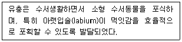
- 매미목
- 메뚜기목
- 잠자리목
- 집게벌레목
(정답률: 78%)
60. 다음 절지동물의 분류군과 일반적인 호흡기관이 올바르게 연결된 것은?
- 갑각류 - 서폐
- 거미류 - 기관
- 배각류 - 말피기관
- 곤충류 – 아가미
(정답률: 55%)
4과목: 보존 및 자원생물학
61. 생물종과 군집을 보호하기 위한 우선순위를 설정하는데 적용되는 3가지 기준과 가장 거리가 먼 것은?
- 유용성(utilty)
- 위험성(endangerment)
- 차별성(distinctiveness)
- 국가적 특성(nationality)
(정답률: 70%)
62. 다음 보기가 설명하는 것으로 옳은 것은?
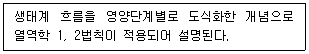
- 개체군
- 생물농축
- 1차 생산력
- 생태(적) 피라미드
(정답률: 70%)
63. 생물다양성의 개념과 가장 거리가 먼 것은?
- 종 다양성
- 유전적 다양성
- 진화적 다양성
- 군집 및 생태계 다양성
(정답률: 70%)
64. 생물다양성의 구성요소에 관한 설명으로 가장 거리가 먼 것은?
- 생물다양성의 구성요소에는 직접적인 경제가치는 물론 간접적인 경제 가치도 부여될 수 있다.
- 간접적 가치는 수확하거나 손상하지 않고도 우리에게 경제적 이득을 제공하는 생물다양성에 부여된다.
- 직접적인 경제 가치를 소비성 가치와 생산성 가치로 나눌 때 땔나무, 약품, 건축자재 등은 소비성 가치를 지닌다.
- 자연계에 존재하는 많은 종들은 가축이나 유전적으로 우수한 새로운 농산물로 쓰일 수 있다는 점에서 비소비적 가치를 지닌다.
(정답률: 68%)
65. 보전생물학에 대한 설명으로 가장 적합한 것은?
- 보전생물학은 단기간에 걸친 생물보호를 기본 관심사로 삼는다.
- 보전생물학은 생물다양성 붕괴의 위협에 대응하여 발전한 종합적인 과학이다.
- 보전생물학은 종, 군집 및 생태계에 미치는 인간의 활동에 대해서는 관심을 두지 않는다.
- 보전생물학은 경제적인 요인들을 일차적으로 고려하고, 일반화된 이론접근에 중점을 둔다.
(정답률: 78%)
66. 동물원의 기능과 가장 거리가 먼 것은?
- 희귀종의 보전
- 보전을 위한 교육
- 희귀종 및 멸종위기종의 인공번식
- 모든 희귀종을 한 곳에 모아 놓음으로써 유전적 풀(pool)의 최대 증가
(정답률: 74%)
67. 식물원과 수목원의 기능으로 가장 거리가 먼 것은?
- 희귀종과 위험종의 재배
- 희귀종의 상업적 판매
- 식물의 분포나 서식지 요구도에 대한 정보 제공
- 탐사대를 파견하여 새로운 종 발견 및 기초연구 수행
(정답률: 80%)
68. 다음 중 종다양성 감소의 근본적인 원인으로 옳은 것은?
- 서식지 파괴
- 질병의 확산
- 외래종과의 경쟁
- 대기 중 온실가스의 증가
(정답률: 80%)
69. 유기염소 살충제가 먹이사슬을 거치며 축적되는 과정을 기술한 레이첼 카슨의 책은?
- 가이아
- 침묵의 봄
- 훌륭한 신세계
- 린네의 생태일기
(정답률: 80%)
70. 다음 보기가 설명하는 것으로 옳은 것은?
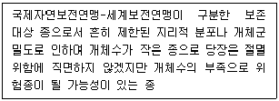
- 희귀종(Rare)
- 절멸종(Extinct)
- 취약종(Vulnerable)
- 위험종(Endangered)
(정답률: 49%)
71. 생물다양성 개념에 등장하는 종(species)에 관한 설명으로 가장 거리가 먼 것은?
- 하나의 종이란 형태적, 생리학적 및 생화학적인 몇 가지 특성에 있어 다른 개체군과의 차이를 보이는 개체군을 의미한다.
- DNA 염기서열분석 등을 이용하면 박테리아처럼 외관상 별다른 차이가 없는 종도 구분ᄒᆞᆯ 수 있다.
- 야외 관찰을 주로 하는 생물학작들은 주로 자연계에서 개체들 간의 교배 여부를 파악하여 생물학적 종 구분에 필요한 정보를 얻는다.
- 형태학적 종의 개념은 표본동정이나 종의 체계적인 배열을 연구하는 분류학자들이 가장 많이 사용하는 방식이다.
(정답률: 64%)
72. 유효개체군 크기에서 50/500 규칙(50/500 rule)과 가장 거리가 먼 것은?
- 이 규칙은 실제 상황에 잘 적용된다.
- 개체군 범위에서 유전적 변이를 유지할 수 있다.
- 유전적 변이를 유지하기 위해 필요한 최소개체수 범위와 관련된다.
- 모든 개체들이 균등한 교배확률과 같은 수의 자손을 가지는 개체들로 구성되어 있다는 가정을 가진다.
(정답률: 70%)
73. 다음 중 멸정되기 쉬운 종으로 가장 거리가 먼 것은?
- 몸체가 작은 종
- 유저적 변이가 낮은 종
- 개체군의 크기가 작은 종
- 계절에 따라 이동하는 생물 종
(정답률: 65%)
74. 생물다양성을 위협하는 요인과 가장 거리가 먼 것은?
- 서식지 단편화
- 서식처 연결통로 설치
- 서식지 악화(오염을 포함)
- 인위적 목적을 위한 종의 과도한 이용
(정답률: 81%)
75. 생물다양성을 보전함으로써 얻을 수 있는 간접적 경제 가치로 가장 거리가 먼 것은?
- GDP 증대
- 기후 조절
- 폐기물 처리
- 수자원과 토양자원의 보호
(정답률: 57%)
76. 생물서식지 분할에 따른 가장자리 효과에 대한 설명으로 가장 거리가 먼 것은?
- 단편화된 가장자리와 내부 산림의 미세기후는 거의 동일하다.
- 산림의 가장자리에 덩굴류나 생장이 빠른 선구종들이 자랄 수 있다.
- 산림의 가장자리는 환경이 교란된 지역이어서 병원균들이 쉽게 정착해서 번식하고 분할된 지역 내부로 번져가 수 있다.
- 산림이 분할될 경우, 산림의 가장자리 지역에서는 바람이 강해지고 습도가 낮아지며 온도가 올라간다.
(정답률: 68%)
77. 야생동물의 종자를 채집하여 종자은행에 저장하고자 할 때 야생종의 표본 추출전략에 대한 설명으로 가장 거리가 먼 것은?
- 절멸의 위험이 있는 종은 수집의 우선순위에 해당한다.
- 개체들의 자식생산 능력이 낮은 경우에는 수년에 걸쳐 고루 종자를 수집한다.
- 개체당 종자수는 종자의 활력에 따라 정해야하며, 종자의 활력이 높으면 한 개체당 소량의 종자가 채집될 것이다.
- 종의 지리적, 환경적 범위 대부분을 포함할 수 있도록 종자의 수집은 한 종당 2개 이상의 개체군으로부터 이루어져야 한다.
(정답률: 50%)
78. 생물다양성 측정에 사용되는 방법 중 단일군집내의 종수를 의미하며, 종 풍부도 개념에 가장 가까운 측정방법은?
- 알파 다양성(alpha diversity)
- 베타 다양성(beta diversity)
- 감마 다양성(gamma diversity)
- 델타 다양성(delta diversity)
(정답률: 61%)
79. 종이 생존하는데 필요한 최소 크기의 개체군에 관한 설명으로 가장 거리가 먼 것은?
- 최소존속개체군이라 한다.
- 서식지 크기와 밀접한 관계가 있다.
- 보전생물학적인 관점에서 중요한 개념이다.
- 종을 보전하기 위해서는 개체군을 최소로 유지한다.
(정답률: 71%)
80. 부영양화된 호수나 연못을 복원하는 과정에 관한 설명으로 가장 거리가 먼 것은?
- 어류 개체군을 조절하여 수질을 개선하는 것을 하향식(top-down) 조절이라고 한다.
- 하수처리방식을 개선하고 오염된 물을 처리하여 수체에 들어오는 무기영양물질을 감소시킨다.
- 포식성 어류를 호수에 넣어주면 동물성 플랑크톤과 갑각류 개체군이 감소되어 수질악화를 초래한다.
- 상향식(bottom-up) 조절방법은 하천저토에서 수체로 영양물질이 재순환되는 내부기작이 있는 경우에 수질 개선이 어렵다.
(정답률: 54%)
5과목: 자연환경관계법규
81. 습지보전법상 습지보호지역 지정 기준으로 옳지 않은 것은?
- 특이한 지질학적 가치를 지닌 지역
- 희귀한 야생 동식물이 서식하는 지역
- 자연 상태가 원시성을 지니고 있는 지역
- 가뭄에도 습지가 지속적으로 유지되는 지역
(정답률: 56%)
82. 야생생물 보호 및 관리에 관한 법규상 멸종위기 야생생물에 해당되지 않는 것은?
- 수달
- 고라니
- 참수리
- 감돌고기
(정답률: 64%)
83. 야생생물 보호 및 관리에 관한 법규상 야생생물 특별보호구역 대상 지역 기준으로 옳지 않은 것은?
- 멸정위기 야생생물의 집단서식지·번식지로서 특별한 보호가 필요한 지역
- 자연 상태가 원시성을 유지하고 있거나 생물다양성이 풍부하여 보전 및 학술적 연구가치가 큰 지역
- 멸종위기 야생동물의 집단도래지로서 학술적 연구 및 보전 가치가 커서 특별한 보호가 필요한 지역
- 멸종위기 야생동물이 서식·분포하고 있는 곳으로서 서식지·번식지의 훼손 또는 해당 종의 멸종 우려로 인하여 특별한 보호가 필요한 지역
(정답률: 64%)
84. 자연공원법상 공원관리청이 자연공원을 효과적으로 보전하고 이용할 수 있도록 하기 위해 구분한 용도지구로 거리가 먼 것은?
- 공원자연보존지구
- 공원자연환경지구
- 공원개발환경지구
- 공원문화유산지구
(정답률: 58%)
85. 국토기본법령상 중앙행정기관의 장 및 시·도지사가 수립하는 국토종합계획 실행을 위한 소관별 실천계획은 몇 년 단위로 작성하는가?
- 1년
- 3년
- 5년
- 10년
(정답률: 48%)
86. 자연공원법상 용도지구 중 공원자연보존지구에 해당하지 않는곳은?
- 생물다양성이 특히 풍부한 곳
- 자연생태계가 원시성을 지니고 있는 곳
- 특별히 보호할 가치가 높은 야생 동식물이 살고 있는 곳
- 도시개발을 제한하고 자연환경을 보전할 필요가 있는 곳
(정답률: 53%)
87. 다음은 자연환경보전법상 용어의 정의이다. ( ) 안에 가장 적합한 것은?
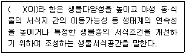
- 생태축
- 생태통로
- 소(小) 생태계
- 생태·경관보전지역
(정답률: 33%)
88. 환경정책기본법령상 하천에서 음이온 계면활성제(ABS)의 환경기준으로 옳은 것은? (단, 사람의 건강보호기준, 단위는 mg/L)
- 0.⑤ 이하
- 0.1 이하
- 0.5 이하
- 검출되어서는 안 됨(검출한계 0.01)
(정답률: 33%)
89. 자연환경보번법상 생태·경관보전지역의 보전을 위하여 금지하여야 할 행위에 해당되지 않는 것은?
- 가축의 방복
- 풀, 입목·죽을 채취·벌채
- 동물을 포획하거나 알을 채취하는 행위
- 조난된 동물을 구조·치료하여 동일지역에 방사하는 경우
(정답률: 73%)
90. 국토의 계획 및 이용에 관한 법률상 토지의 이용실태 및 특성, 장래의 토지 이용 방향 등을 고려하여 국토를 구분한 용도지역과 가장 거리가 먼 것은?
- 도시지역
- 관리지역
- 농업진흥지역
- 자연환경보전지역
(정답률: 41%)
91. 습지보전법상 다음 ( ) 안에 알맞은 것은?
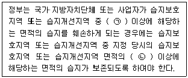
- ㉠ 4분의 1, ㉡ 2분의 1
- ㉠ 2분의 1, ㉡ 2분의 1
- ㉠ 4분의 1, ㉡ 3분의 1
- ㉠ 2분의 1, ㉡ 3분의 1
(정답률: 65%)
92. 독도 등 도서지역의 생태계 보전에 관한 특별법령상 무인도서등의 자연생태계 등의 조사에 포함되어야 할 내용으로 가장 적합하게 나열된 것은? (단, 기타 자연생태계 등의 보전을 위하여 특히 조사할 필요가 있다고 환경부장관이 인정하는 사항은 제외한다.)
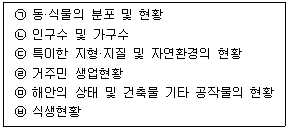
- ㉠, ㉡, ㉢, ㉥
- ㉠, ㉡, ㉣, ㉤
- ㉠, ㉢, ㉤, ㉥
- ㉠, ㉢, ㉣, ㉤
(정답률: 67%)
93. 백두대간 보호에 관한 법률상 보호지역에 거주하는 주민 또는 보호지역에 토지를 소유하고 있는 자에 대해 산림청장과 지방자치단체의 장이 수립 및 시행하는 주민지원사업에 해당하지 않는 것은?
- 야생식물의 인공증식시설의 설치사업
- 자연환경 보전·이용 시설의 설치사업
- 수도시설의 설치 지원 등 복지 증진사업
- 농림축산업 관련 시설 설치 및 유기영농지원 등 소득증대사업
(정답률: 41%)
94. 야생생물 보호 및 관리에 관한 법령상 환경부장관은 수렵동물의 지정 등을 위하여 야생동물의 종류 및 서식밀도 등에 대한 조사를 최소한 몇 년마다 실시하는가?
- 1년
- 2년
- 3년
- 4년
(정답률: 52%)
95. 환경정채기본법령상 환경정보망의 구축·운영 대상이 되는 환경정보로 옳지 않은 것은?
- 환경상태의 조사·평가 결과
- 일반국민에게 유용한 환경정보
- 한국농촌공사의 환경현황 조사결과
- 자연환경 및 생태계의 현황을 표시한 지도 등 환경지리정보
(정답률: 49%)
96. 국토의 계획 및 이용에 관한 법률상 도시·군관리계획에 대한 설명으로 옳지 않은 것은?
- 도시·군관리계획 결정은 고시가 된 날부터 10일 후에 그 효력이 발생한다.
- 도시·군관리계획을 입안하는 경우 입안을 위한 기초조사의 내용에 도시·군관리계획이 환경에 미치는 영향 등에 대한 환경성검토를 포함하여야 한다.
- 도시·군관리계획의 수립기준, 도시·군관리계획도서 및 계획설명서의 작성기준·작성방법 등은 대통령령으로 정하는 바에 따라 국토교통부장관이 정한다.
- 특별시장·광역시장 등은 5년마다 관할구역의 도시·군관리계획에 대하여 타당성 여부를 재검토하여 정비하여야 한다.
(정답률: 52%)
97. 다음은 국토의 계획 및 이용에 관한 법률상 이 법에서 사용하는 용어의 뜻에 관한 사항이다. ( ) 안에 알맞은 것은?
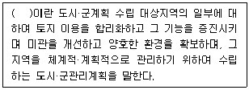
- 개발단위계획
- 개발실시계획
- 지구단위계획
- 도시기반계획
(정답률: 48%)
98. 자연환경보전법상 생물다양성의 보전을 위해 실시되는 자연환경조사에 대한 설명으로 가장 거리가 먼 것은?
- 환경부장관은 관계중앙행정기관의 장과 협조하여 5년마다 전국의 자연환경을 조사하여야한다.
- 생태·자연도에서 1등급 이상 권역으로 분류된 지역에 대하여는 7년마다 자연환경을 조사하여야 한다.
- 지방자치단체의 장은 당해 지방자치단체의 조례가 정하는 바에 의하여 관할구역의 자연환경을 조사할 수 있다.
- 지방자치단체의 장은 자연환경을 조사하는 경우에는 조사계획 및 조사결과를 환경부장관에게 보고하여야 한다.
(정답률: 60%)
99. 환경정책기본법령상 보기의 서식지 및 생물특성이 나타나는 하천에서 발견되는 생물지표종으로 옳은 것은?
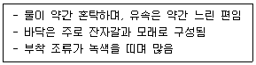
- 가재
- 강도래
- 옆새우
- 물달팽이
(정답률: 53%)
100. 생물다양성 보전 및 이용에 관한 법률상 환경부장관의 승인을 받지 아니하고 국내에 위해우려종을 수입 또는 반입한 자에 대한 벌칙기준은? (단, 다른 법에 따른 승인을 받은 경우는 제외한다.)
- 2년 이하의 징역 또는 2천만원 이하의 벌금
- 3년 이하의 징역 또는 3천만원 이하의 벌금
- 5년 이하의 징역 또는 5천만원 이하의 벌금
- 7년 이하의 징역 또는 7천만원 이하의 벌금
(정답률: 28%)